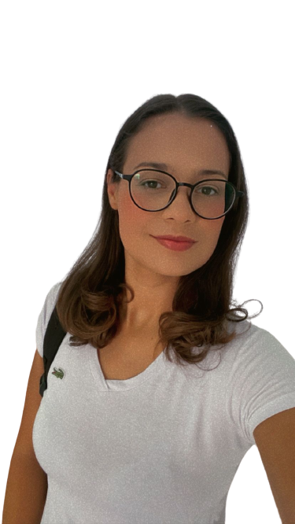

Meu nome é Amábile Silva, tenho 32 anos e nasci em São Paulo.
Atualmente, vivo com com meu esposo e filho e estou mudando de ramo profissional.
Para conseguir isso, iniciei neste ano de 2023 o curso no Senai de Tecnólogo em Análise e Desenvolvimento de Sistema.
A minha paixão de infância me levou a agora as 32 anos iniciar neste ramo da tecnologia, visando claro o mundo atual,
com industrias e empresas buscando mais esta ferramenta para incorporar as suas necessidades do mundo globalizado em
que estamos vivendo.
O meu sonho é ter a oportunidade de desenvolver um software que revolucione a medicina, mas se não eu não sonhar,
então a minha vida não terá um objetivo. Para conseguir o meu objetivo, pretendo continuar estudando e aprimorando
meu conhecimento nesta área

Experiência
Colégio Sorocaba
Área: Auxiliar Administrativo
Período: 02/08/2016 a 06/04/2021 - 4 anos e 9 meses
Empresa: Colégio Adventista de Taboão da Serra
Área: Aux. Administrativo, Monitora de aluno e auxiliar de classe.
Período: 15/02/2013 a 03/02/2015 - 2 anos
Empresa: Polícia Militar do Estado de São Paulo
Área: Aux. Administrativo Temporário
Período: 15/09/2010 a 15/09/2012 - 2 anos
Empresa: Colégio Boscarioli
Área: Secretária
Período: 02/07/2007 a 20/11/2008 - 1 ano e 4 meses
Empresa: Interfile Gestão de Arquivos e Documentos
Área: Aux. Administrativo Menor Aprendiz
Período: 17/11/2005 a 20/06/2007 - 1 ano e 7 meses
Cursos
Cursos Complementares
Administração; Contabilidade; Marketing; Marketing Pessoal; Informática; Comunicação e Expressão; Primeiros Socorros – CIEE;
Cursos de Formação Administrativo do Serviço Auxiliar Voluntário da Segurança Pública PMESP;